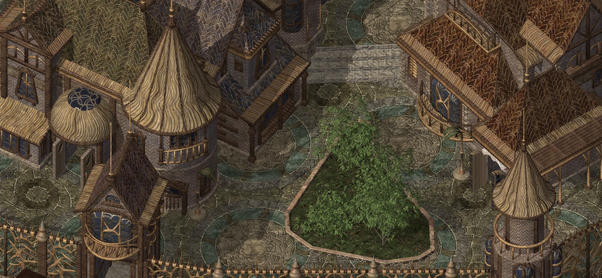

01Sample · 74%
Environments & Maps
Source preparation, ×4 enhancement, tile reconstruction and in-game visual review.
- Large environment backgrounds
- Day and night variants
- Water and overlay treatment

Production overview
A clear view of the work across visual production, quality review and engine performance.
The values below are placeholders used to design the dashboard. They are not current project figures.
Overall project
The final dashboard will consolidate structured production tracking with selected manual notes, while keeping each discipline readable on its own.
Source preparation, ×4 enhancement, tile reconstruction and in-game visual review.
Frame restoration, alpha treatment and pause-aware interpolation toward 30 fps.
In-game review of seams, alpha, occlusion, water, color and isolated defects.
Investigation of asset demand, preparation timing, loading spikes and safe fallback paths.
Delivery flow